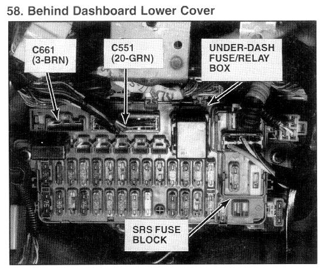

Operation CHARM
: Car repair manuals for everyone.
Home
>>
Acura
>>
1994
>>
Integra (RS, LS) L4-1834cc 1.8L DOHC FI
>>
Repair and Diagnosis
>>
Relays and Modules
>>
Relays and Modules - Power and Ground Distribution
>>
Relay Box
>>
Locations
>>
Under-Dash Fuse/Relay Box
Under-Dash Fuse/Relay Box

Behind Dashboard Lower Cover